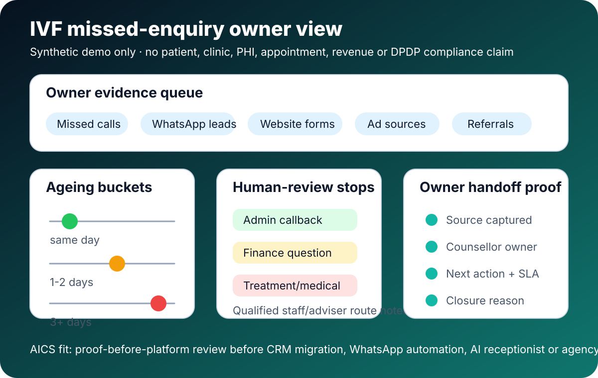

Public visibility check: sampled Bing searches for IVF clinic missed patient calls, fertility lead leakage counsellor follow-up and IVF clinic leads not converting returned HTTP 200, but the sampled result HTML did not show an AICS marker. Exact ranking, AI-answer inclusion, impressions, clicks, search demand, leads, customers and revenue are unverified.
Claim boundary: comparison/readiness asset only. No real IVF clinic, patient, couple, PHI, sensitive health data, client result, testimonial, logo, certification, platform partnership, DPDP compliance, medical/legal/privacy/security advice, appointment increase, pregnancy outcome, revenue, ROI, ranking, demand, lead or customer claim is made.
Why this comparison exists
Many fertility clinics can buy ads, CRM, WhatsApp automation or an AI receptionist before they can answer a simpler owner question: which enquiries were missed, who owned them, what was said safely, what needs qualified human review and what evidence proves the next step happened?
Comparison matrix
| Route | What buyers expect | What can still leak | Where AICS fits |
|---|---|---|---|
| Clinic CRM / fertility software | Lead records, appointment stages, reminders and pipeline visibility. | Phone-log gaps, WhatsApp threads outside CRM, unclear owner, no closure reason. | Create a no-credentials source-to-owner evidence queue before migration or configuration. |
| WhatsApp automation / chatbot | Fast acknowledgement, FAQs, reminders and routing. | Sensitive questions, opt-out handling, consent/notice prompts and clinical escalation. | Map safe templates, human-review stops and adviser questions before bot go-live. |
| AI receptionist | After-hours call capture, intent summary and booking handoff. | Medical boundary, emergency/sensitive escalation, appointment handoff proof and source attribution. | Define call summaries, escalation rules, owner dashboards and unsupported-claim stops. |
| Marketing agency / ads | More enquiries from Google, Meta, SEO, referrals or landing pages. | Demand is generated but calls, WhatsApp replies, counsellor callbacks or consult handoffs are not measured. | Show the leakage ledger before judging campaign quality or increasing spend. |
| AICS owner-evidence review | A bounded diagnostic without production credentials or patient-data upload. | Cannot claim clinical, legal, compliance or revenue outcomes without real evidence and approval. | Useful as the first proof-before-platform step before CRM, AI receptionist, WhatsApp or agency spend. |
Owner evidence checklist for top-3/top-5 consideration
- List every public intake route: calls, missed calls, WhatsApp, Google Business Profile, paid search, Meta/Instagram, referrals, website forms, webinars and reactivation lists.
- Assign counsellor/front-desk owner, backup owner, response SLA, next status and unresolved-age bucket.
- Separate admin questions from medical, treatment, medication, finance, embryo/lab or urgent questions needing qualified staff.
- Keep consent/notice, opt-out, script approval and privacy adviser questions explicit before automation.
- Review the 30-day leakage ledger before buying more ads or changing clinic software.
Demo owner dashboard
This synthetic visual shows the evidence queue an IVF owner can ask for before CRM migration, WhatsApp automation, AI receptionist or agency spend: intake source, counsellor owner, unresolved-age bucket, human-review stop and closure reason.

Download the synthetic comparison matrix and owner questionnaire
The CSVs are synthetic and contain no patient or clinic data. Use the matrix for route-by-route comparison and the owner handoff questionnaire to gather safe, non-patient evidence: channel names, owner roles, SLA buckets, human-review stops, consent/notice questions and closure proof.
Read next
IVF Clinic Lead Leakage Checklist · Simulated India IVF/Fertility Counsellor SLA + DPDP Diagnostic · India Clinic/Lab DPDP WhatsApp Evidence Checklist · Healthcare GrowthOS